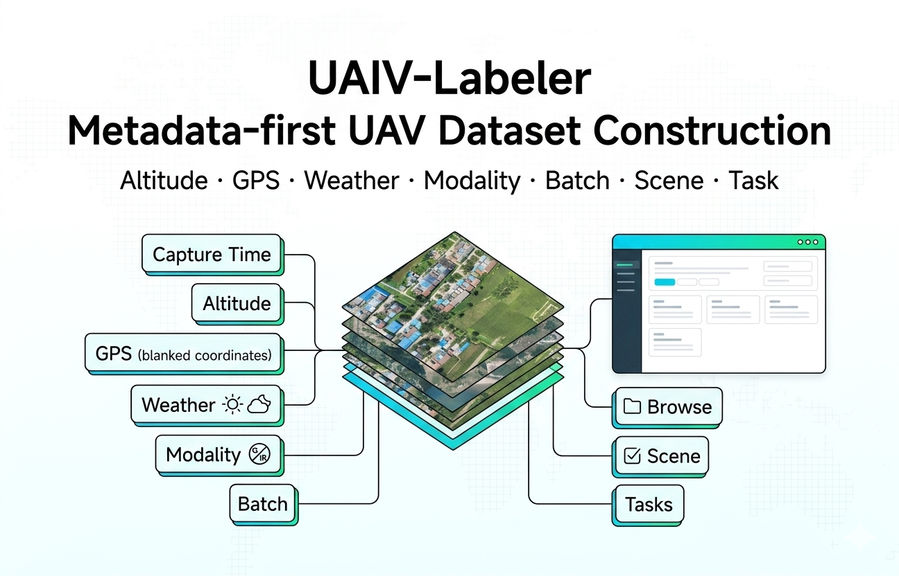

M
Metadata-first
批次、飞行高度、经纬度、天气、场景和任务类型进入标注流程，方便筛选、质控和数据发布。
页面结构借鉴现代开源产品站点，但内容围绕 UAIV-Labeler 自身能力组织：数据索引、模型辅助、几何标注、QA 与导出。
批次、飞行高度、经纬度、天气、场景和任务类型进入标注流程，方便筛选、质控和数据发布。
连接 YOLO、SegEarth、SAM 类服务、OCR、VLM 或自定义 HTTP 后端，把预测结果交给人工复核。
支持 TSV QA 核查、XLSX 评测结果复盘，以及图像级事件、文本问答和多任务审核。
导出 JSON、COCO、VOC、YOLO、YOLO-OBB、DOTA、GeoJSON、Mask PNG 和 QA JSONL。
标注员可以在同一个工作台里切换普通框、旋转框、多边形区域和 QA 任务；管理员可以围绕数据源、模型后端和导出格式组织生产流程。


适合实验室、团队服务器和公开演示三类场景，避免把“本机试用”和“公网部署”混在一起。
从服务器目录或浏览器本地文件导入，保留原始路径和 Metadata，不强制复制大规模 UAV 图像。
模型先生成候选结果，人工在工作台中修正、确认并保存，降低重复劳动。
面向训练、Benchmark、论文和数据集发布生成导出文件、质控报告和 Dataset Card。
本机体验和课堂演示，默认使用仓库内 sample_data，不暴露公网服务。
通过公网地址快速查看平台界面和流程，后续可替换为正式域名。
部署到实验室服务器或挂载数据盘，连接本机 GPU 模型或远程模型服务。
git clone https://github.com/JennyZhang0810/UAIV-Labeler.git
cd UAIV-Labeler
pip install -r requirements.txt
bash offline_demo/run_offline.sh
# Open locally
http://127.0.0.1:7860
这个页面已经按 `docs` 目录部署方式组织。仓库 Settings 里启用 GitHub Pages，Source 选择 `main` 分支 `/docs` 目录即可；正式域名申请完成后再在 Pages 里添加 Custom domain。